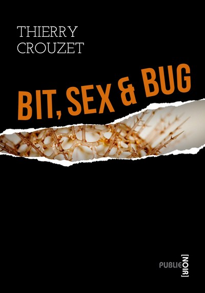

Bit, Sex and Bug

« Bit, Sex and Bug, c’est une histoire à tourner la page avant même qu'elle finisse, c’est des aventures, des personnages – et surtout un projet. » François Bon
ebook gratuit : Extraits ebook.ebook 3.49 € : ebook.
papier 2.99 € : Amazon, Amazon, epagine.fr, immateriel.fr, publie.net, chez lulu, chez lulu.
Avez-vous déjà eu peur du Sida ? Avez-vous songé que le virus HIV pouvait vous assassiner ? Pour Michel, il est trop tard. Julien entend le venger. Il va poursuivre le tueur jusqu’au bout du monde.
Fiche produit
Éditeur : publie.net
(23 janvier 2011)
Collection : Publie Noir
Genre : thriller
Volume : 380 000 signes, 254 pages papier A5
ISBN : 978-2-8145-0415-8
ISBN papier : 978-1-4467-8637-6
Liens
- ISBN papier : 978-1-4467-8637-6
- ISBN ebook : 978-2-8145-0415-8
Sommaire | Texte publié vendredi 21 janvier 2011